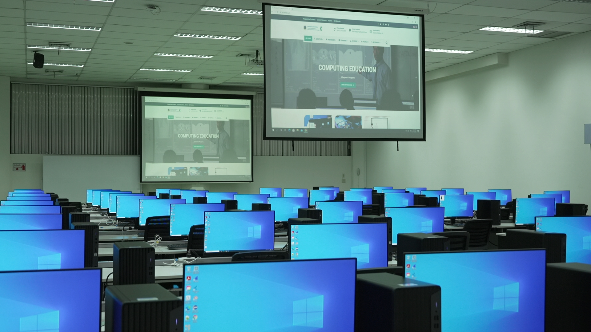

Computing facilities
Laboratory environments support practical learning and the application of technical concepts.
The Faculty of ICT is located at Mahidol University’s Salaya campus in Nakhon Pathom, Thailand.

Computer laboratory. Photograph supplied for this campaign.
Laboratory environments support practical learning and the application of technical concepts.
Practical work allows students to develop solutions, communicate their ideas and evaluate their results.
Explore faculty announcements for overseas internships and exchanges, including eligibility and selection details.
Prospective students from Vietnam should confirm practical arrangements before accepting an offer or making travel plans.
Ask about available options, rental conditions and travel to campus.
Confirm which documents are required for your circumstances and when they should be prepared.
Plan for accommodation, meals, local transport, insurance, study materials and travel home.
Consult the official announcement for application dates and entry requirements.